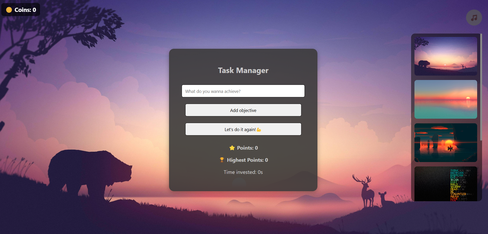
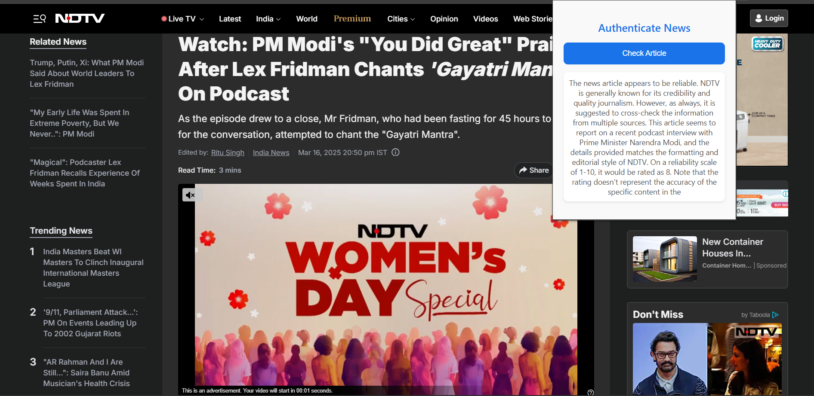
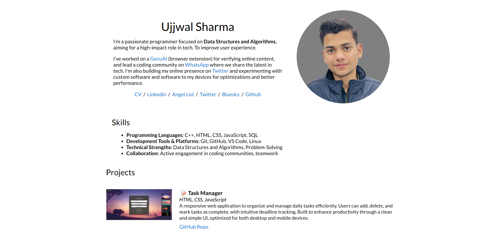

|
Ujjwal Sharma
I'm a passionate programmer focused on Data Structures and Algorithms, aiming for a high-impact role in tech. To improve user experience.
I’ve worked on a GenuAI (browser extension) for verifying online content, and lead a coding community on WhatsApp where we share the latest in tech. I'm also building my online presence on Twitter and experimenting with custom software and software to my devices for optimizations and better performance.
CV /
Linkedin /
Angel List /
Twitter /
Bluesky /
Github
|
|
Skills
- Programming Languages: C++, HTML, CSS, JavaScript, SQL
- Development Tools & Platforms: Git, GitHub, VS Code, Linux
- Technical Strengths: Data Structures and Algorithms, Problem-Solving
- Collaboration: Active engagement in coding communities, teamwork
|
Projects

📝 Task Manager
HTML, CSS, JavaScript
A responsive web application to organize and manage daily tasks efficiently. Users can add, delete, and mark tasks as complete, with intuitive deadline tracking. Built to enhance productivity through a clean and simple UI, optimized for both desktop and mobile devices.
GitHub Repo

🤖 GenuAI
Browser Extension | JavaScript, HTML, CSS
GenuAI is a browser extension that verifies the authenticity of online content. Users can select any text and instantly check its genuineness using AI-powered API analysis. Designed for fast performance and seamless integration, it enhances digital trust while browsing and helps detect misinformation with ease.
GitHub Repo

🌐 Personal Portfolio Website
Frontend | HTML, CSS
This responsive portfolio website showcases my skills, projects, and contact information. Built entirely with HTML and CSS, it features smooth scrolling, theme toggling, interactive navigation, and a downloadable resume. Designed for clarity and ease of navigation, it reflects my commitment to clean code and effective UI/UX.
GitHub Repo
Achievements
⬇️ Download Resume
Contact
If you'd like to get in touch, feel free to reach out via email or connect with me on social platforms below.
|
{kind=link}